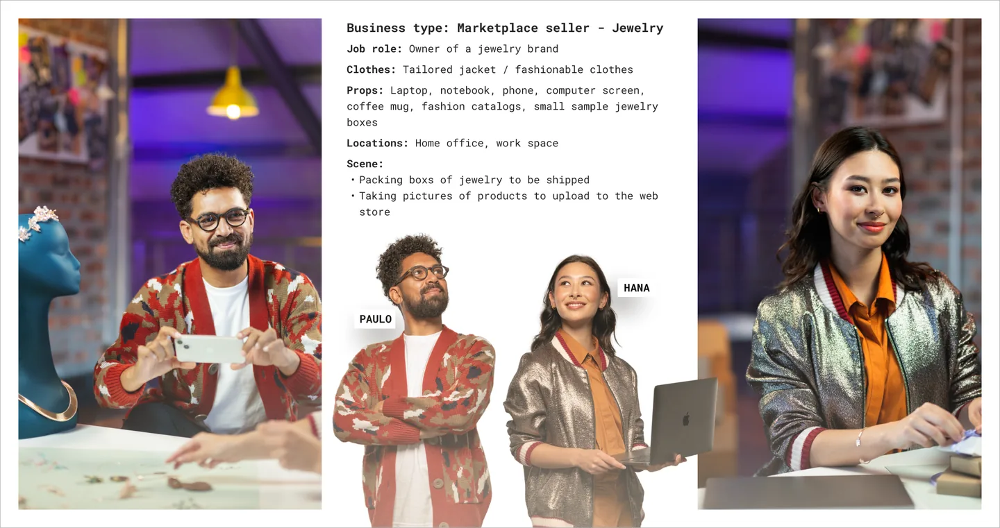
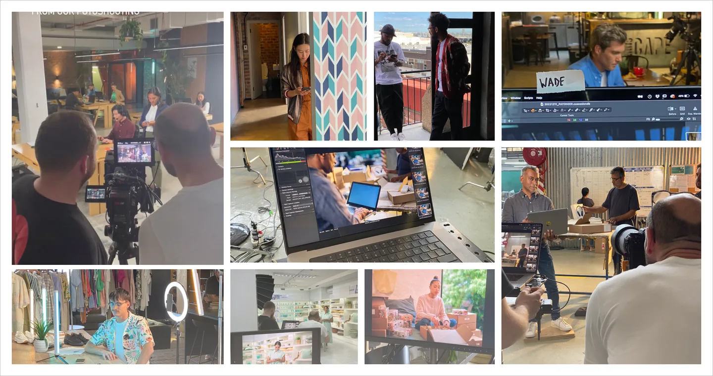

Customer image library
Stock imagery made Payoneer look like every competitor it had, which works against a brand built on global inclusion. I led one original shoot in South Africa, cast to represent customers across the markets we serve, and catalogued the results so any team could find the right frame without asking.
What I inherited
Generic stock, interchangeable with what every competitor was running, and a promise about global inclusion that the pictures did not support.
What I decided
To commission original photography rather than better stock, and to cover every market from one shoot. The people in frame are cast models, not customers.
What I led
The casting, the shot list and the look, then the catalogue that kept them findable once the excitement wore off.
Scope
One original shoot, on location in South AfricaCommissioned for Payoneer and owned outright
Cast to represent customers worldwideChosen for the businesses the company serves
Catalogued by region, use case and themeFindable without asking a designer
An owned libraryNo further reliance on generic stock

